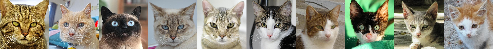
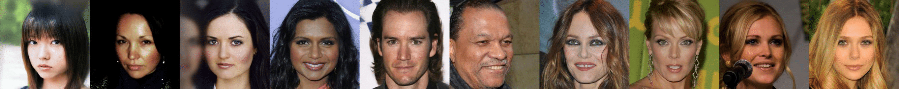
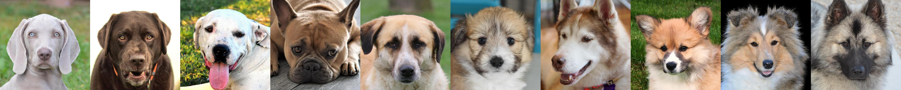

LARGE: Latent-Based Regression through GAN Semantics
Age 
Hair Color 
Fur Fluffiness 
Abstract
We propose a novel method for solving regression tasks using few-shot or weak supervision. At the core of our
method is the fundamental observation that GANs are incredibly successful at encoding semantic information within
their latent space,even in a completely unsupervised setting. For modern generative frameworks,this semantic
encoding manifests as smooth, linear directions which affect image attributes in a disentangled manner. These
directions have been widely used inGAN-based image editing. We show that such directions are not only linear,
but that the magnitude of change induced on the respective attribute is approximately linear with respect to the
distance traveled along them. By leveraging this observation,our method turns a pre-trained GAN into a
regression model, using as few as two labeled samples. This enables solving regression tasks on datasets and
attributes which are difficult to produce quality supervision for. Additionally, we show that the same
latent-distances can be used to sort collections of images by the strength of given attributes, even in the
absence of explicit supervision. Extensive experimental evaluations demonstrate that our method can be applied
across a wide range of domains, leverage multiple latent direction discovery frameworks, and achieve
state-of-the-art results in few-shot and low-supervision settings, even when compared to methods designed to
tackle a single task.
Citation
@article{nitzan2021large,
title = {LARGE: Latent-Based Regression through GAN Semantics},
author = {Nitzan, Yotam and Gal, Rinon and Brenner, Ofir and Cohen-Or, Daniel},
journal = {arXiv preprint arXiv:2107.11186},
year = {2021}
}
Contact
yotamnitzan at gmail dot com